Published on May 23, 2021 by Rob Liou, CPA, CMA (email: robliou01@gmail.com)
Since its inception, the price of NEO has fluctuated violently. Besides interest in the NEO ecosystem itself, are there correlates with other assets, commodities, or indices that can help us to understand why the price has risen and fallen in such an unpredictable manner? In this article, we will use R to investigate potential factors, including factors that crypto analysts typically would not consider, such as commodities, stock indices, and crude oil prices.
In particular, the factors we will use R to analyze will include the historical prices of the major crypto benchmarks such as BTC and ETH. We will also look at the two most popular Chinese cryptos for correlations: Binance coin and Tron. We will also use broader indicators of market sentiment such as the Dow Jones International Index, traditional commodities including oil, corn and lumber, and the ultimate traditional inflation hedge, gold. We will begin by using linear regressions to analyze the factors in isolation to see which are most effective individually, then analyze them in multivariate format to see which variables in combination are most effective. We will be sure to use the vif() function to ensure that multicollinearity is accounted for, that is, that the variables are truly independent. In conclusion, we hope that these tests will give us the combination of factors that can give us the best representation explaining the rise in interest of the NEO ecosystem and potentially help us to create a model that can best predict the future direction of NEO.
Before we begin, it should be noted that this article assumes that the reader is familiar with the basics of linear and multivariable regression modelling methods within the realm of applied statistics. If not, here is a very brief tutorial one can use to brush up on the basics of what regressions are and how they are used. For further study, one can simply use Google or Youtube to access the myriad of helpful sites and videos available for free on those platforms. So without further ado, let's begin.
Typically, the greatest correlate for a cryptocurrency is generally with the rest of the crypto market. After all, it seems like when Bitcoin or Ethereum rises or falls, the rest of the market seems to follow along. But which one has the greater effect on NEO? Here, we use Bitcoin and Ethereum as proxies for the rest of the market. We begin by running a linear regression between NEO and BTC for the near 5-year period from September 2016 to April 2021:
Exhibit A: Linear regression between NEO and Bitcoin (9/2017-4/2021)
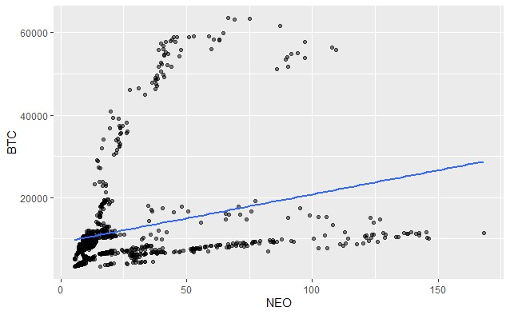 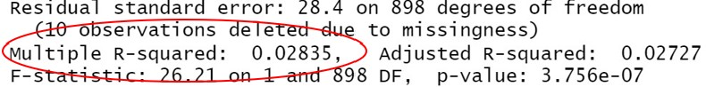
Surprisingly, the R-squared is just 2.8%, which is quite low. Looking at the chart, we can see a correlation of sorts, but not a very strong one at all.
Perhaps NEO and Ethereum are more correlated? After all, NEO has often been branded the “Ethereum of China” before… What would the 5-year history look like with ETH?
Exhibit B: Linear regression between NEO and ETH (9/2017-4/2021)
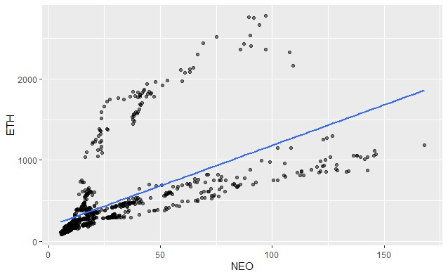Indeed, the chart correlation looks much stronger. In fact, the R-squared is much more correlated, at 36.36% for the entirety of their history. Therefore, those calling NEO the “ETH of China” may be onto something.
Does the Chinese origin of NEO also influence how investors position it in their portfolios? Does it possibly make NEO more correlated with the other Chinese cryptocurrencies, such as Tron or Binance? We run the regression analyses here to see what they look like.
Exhibit C: Linear regression between NEO and Binance Coin (9/2017-4/2021)
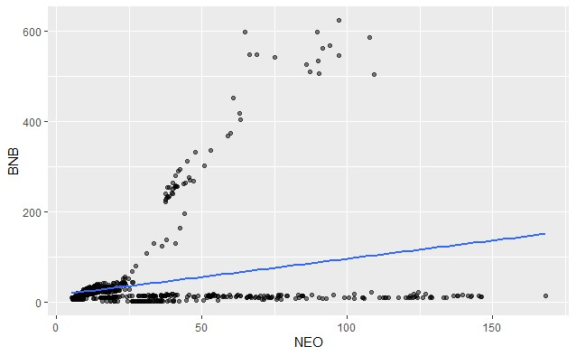With Binance Coin, the correlation is not very strong- the R-squared is only 7.4%. Still, it’s more than double that of Bitcoin.
Exhibit D: Linear regression between Tron and Bitcoin (9/2017-4/2021)
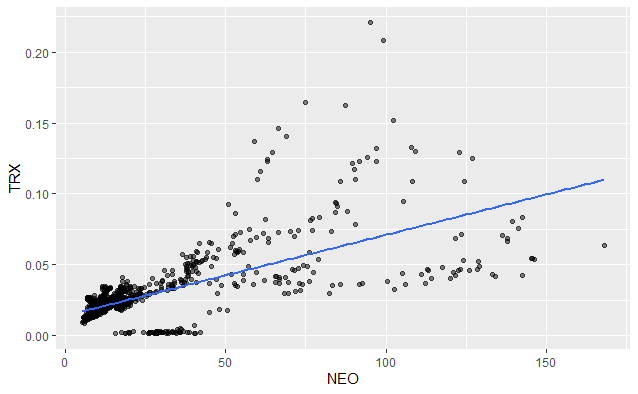With Tron (TRX) however, the correlation is the highest we’ve seen so far, at 44.4%. Therefore, out of all the cryptocurrencies tested, NEO is the most correlated to Tron! So, investors in NEO are most likely to also be investors in Tron, which might say something about the investor base of NEO. They would then be followed by ETH, then Binance, then Bitcoin.
Well, we know that NEO is aiming to be the digital platform for physical assets. Therefore, is there any strong correlation with actual physical commodities? As in, transactions in the real world? We examine commonly used proxies for physical commodities here, starting with gold:
Gold is typically seen as the premier barometer for inflation. However, in recent years, some have claimed that its price has been 'managed,' and therefore has not accurately reflected the true rate of inflation.
The chart for Gold is below:
Exhibit E: Linear regression between NEO and Gold (9/2017-4/2021)
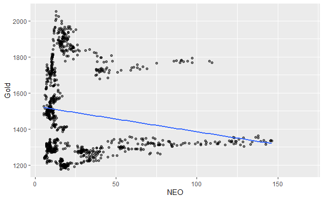Indeed. The R-squared correlation between Gold and NEO is just 3%.
For this reason, we venture into other more actively traded and consumed commodities, beginning with Lumber.
Here is the regression for Lumber:
Exhibit F: Linear regression between NEO and Lumber (9/2017-4/2021)
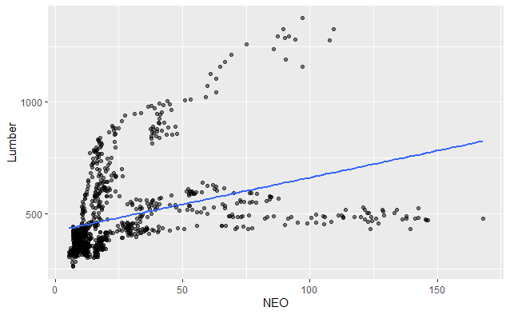The R-squared between Lumber and NEO is 13.99%, which is quite high and possibly more representative of actual inflation than Gold.
We use Corn as a proxy for inflation of agriculture/ food prices:
Exhibit G: Linear regression between NEO and Corn (9/2017-4/2021)
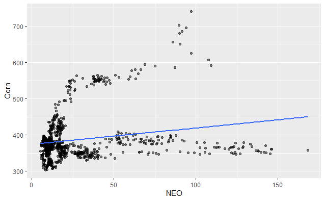The r-squared between Corn and NEO is 4.28%.
We use Crude oil (Brent) as a proxy for the index of energy prices:
Exhibit H: Linear regression between NEO and Crude Oil (Brent) (9/2017-4/2021)
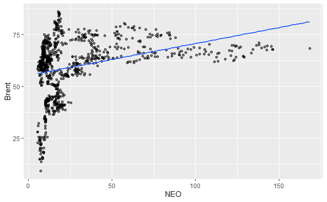The R-squared between Crude Oil (Brent) and NEO is 10.35%, also quite high.
DJIA:
Exhibit I: Linear regression between NEO and Dow Jones Internaional Index (DJIA) (9/2017-4/2021)
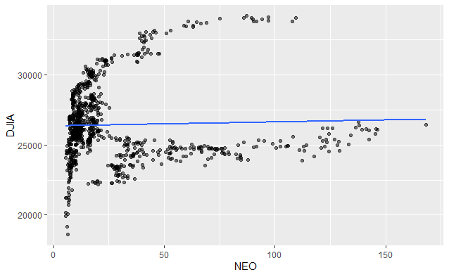Lastly, the R-Squared between the Dow Jones Industrial Average and NEO is just .1%, meaning that NEO prices do not appear to track the broader stock market prices in a meaningful way, a somewhat surprising finding.
Therefore, on an individual basis, the strongest correlation appears to be with Lumber, followed by Crude Oil, then Corn, then Gold, then lastly, the DJIA.
Multivariate Regression Analyses is the process of running a regression analyses using multiple variables. It is similar to running a linear regression, except that it tells us which combination of variables is most responsible for the outcome of a probability equation. The nuance is that we have to make sure that the variables do not suffer from overlap due to inheritance from a common underlying variable. This is known is multicollinearity. We therefore must test for this using the VIF() function (Variable Independence Factor). If the VIF of any of the individual variables exceeds 5, then generally this means that the variables are not independent from each other.
If we run a linear multivariate regression throwing the whole kitchen sink at NEO, that is, including as independent variables all of the cryptocurrencies including BTC, ETH, BNB and TRX, as well as all of the commodities including Lumber, Crude Oil, Gold and Corn, we can actually build a decent model, achieving an R-squared exceeding 85%:
Adjusted R-squared: 0.8522
From a purely observational perspective, this information is actually quite valuable. Generally speaking, an r-squared correlation above 80% provides means that our model provides a high degree of confidence that our variables, in aggregate, are accurately predicting our dependent variable, which is the price. Running the vif() function on the dataset, however, shows that there is high multicollinearity between the variables, which is really not a surprise since we know that many of the variables are bound to move together (i.e. cryptos often move together as a group, as do commodities). Therefore, they aren't truly independent.
17.980369 19.008947 6.183506 4.504967 3.166828 4.191164 1.476786 5.305859
We can see from the above that the VIF for ETH and BTC are well above 5, as are Lumber and Corn, to a much smaller degree. For informational purposes, however. this doesn't really matter to us. After all, if we are looking to just understand the price of NEO, then it doesn't really matter to us if ETH and BTC are dependent on the same factors. That said, however, as forecasters, we do care that these factors are not truly independent, because it is hard for us to forecast these factors in isolation. After all, we are looking to forecast the price of NEO, but if we can't forecast the price of ETH, BTC or Tron, then this model is of little or no use to us. Therefore, we should remove these factors until we can get to a model that contains factors that are independent and that we feel comfortable analyzing and forecasting in isolation.
So, if we remove factors until we are left with a model we are comfortable with, will it still have predictive value?
In this case, the optimum combination not including ETH or BTC would be Lumber - Tron - DJIA - Crude Oil- Corn which can help us to explain 56% of the price variation in NEO. Meanwhile, the multicollinearity between all variables would be below 5. Not too bad.
3.699971 1.931040 2.838525 1.208790 3.270502
In other words, if we can forecast these 5 factors, then we can forecast over 56% of the price variation in NEO. However, since forecasting the price variation of Tron might be difficult, what combination that only included commodities would give us the highest R-squared value ?
Exhibit I: Multivariate regression between NEO and various combinations (9/2017-4/2021)
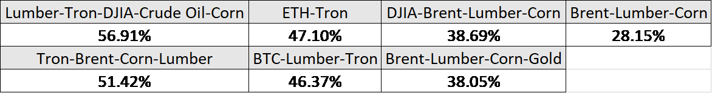As stated before, it is far easier to estimate the future prices of commodities than it is to estimate the price of other crypto currencies, or even the stock market. The reason is because commodities often reflect inflation expectations, which are often telegraphed. See here for an article I wrote previously on how oil prices can be forecast effectively.
Therefore, excluding any model that includes forecasting the price of Tron or DJIA would leave:
1) Lumber - Crude Oil -Corn-Gold (38.05%)
2) Lumber - Corn - Crude Oil (28%)
Option #1 composed of Lumber + Crude Oil + Corn has an R-squared of 38%- Not great, but not bad either.
On a single linear regression basis, the cryptos with the strongest correlation to NEO are:
1) Tron (44.4%)
2) ETH (36.36%)
3) Binance (7.4%)
4) Bitcoin (7.5%)
The commodities with the strongest correlation are:
1) Lumber (13.99%)
2) Crude oil- Brent (10.35%)
3) Corn (4.28%)
4) Gold (3%)
5) Stocks (DJIA) (.1%)
From a multivariable perspective, the combination of Bitcoin- Ethereum- Tron-Binance- Lumber - DJIA- Gold- Corn- Crude Oil can give us an R-squared of 85.22% of the price variation with the price of NEO from its inception. In layman's terms, this means that over 85% of the price variation in NEO can be explained from the variation of those 9 variables, with the majority from Ethereum and Tron, and the rest from a sprinkling of the remaining factors. However, if we are looking to build a predictive model that excludes forecasting the price of Bitcoin or Ethereum, then the following combinations would be worth exploring:
1) Lumber - Tron - DJIA - Crude Oil- Corn (56.91%)
2) Lumber- Tron- Crude Oil- Corn (51.42%)
3) Lumber - Crude Oil- Corn-Gold (38.05%)
4) Lumber - Crude Oil- Corn (28%)
Forecasting the latter 2 combinations may be more feasible than the first two since they exclude forecasting the price of Tron or DJIA. Future articles may focus on forecasting the price of other commodities singularly and in aggregate, as well as attempt to forecast the price of the aforementioned cryptos.
In the meantime, I sincerely welcome any feedback or comments you may have.
Thanks for reading!